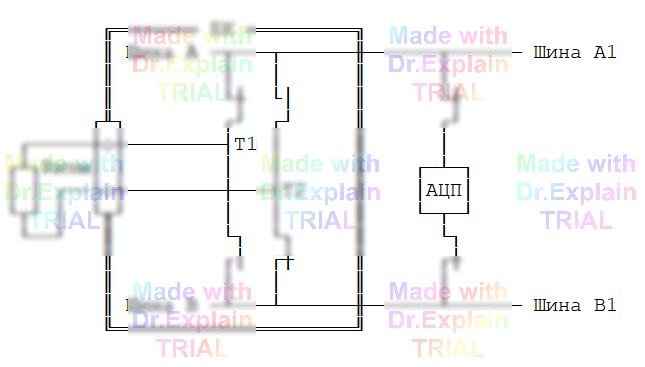

5.2.1 Команда ПЭ (Проверка Электронная)
Команда ПЭ выполняет электронную проверку цепей на сообщение и разобщение с помощью АЦП в 2-проводной схеме. Диапазон контроля (80 Ω ± 60 Ω), напряжение контроля (4 В) и ток обтекания (20 мА) задаются по умолчанию.
Синтаксис
<метка> ПЭ <список_цепей_ССИРТ>
Ключи
ЗР— установить границы разобщения;ЗС— установить границы сообщения;С— усреднять измерения;П— проверять полярность;Г— ручной ввод границ;Т1— выдержка 20 мс перед измерением.
Пример
210 ПЭ С *Ш1/32,Ш2/1,Ш3/12*Ш1/12,123/А5-А15#Ш2/2,Ш2/4*В5*A1-*А20*
Схема измерения

Если при проверке «сообщения» цепей командой ПЭ (или командой ПР) были обнаружены обрывы, то при проверке разобщения эти же фрагменты считаются разобщёнными.
Это повышает информативность проверки, но может приводить к «парадоксальным» результатам, если границы допуска выбраны без учёта погрешности измерителя и сопротивления проводов.
В таких случаях команду ПЭ применять нельзя, а границы диапазона при использовании команды ПР следует скорректировать.